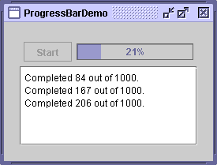
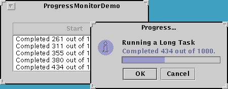

Feedback Form
|
|
Start of Tutorial > Start of Trail > Start of Lesson |
Search
Feedback Form |
Sometimes a task running within a program might take a while to complete. A user-friendly program provides some indication to the user that the task is occurring, how long the task might take, and how much work has already been done. One way of indicating work, and perhaps the amount of progress, is to use an animated image.Another way of indicating work is to set the wait cursor, using the
Cursorclass and the
Component-definedsetCursorcontainer(including any components it contains that have no cursor specified):To convey how complete a task is, you can use a progress bar like this one:container.setCursor(Cursor.getPredefinedCursor(Cursor.WAIT_CURSOR));Sometimes you can't immediately determine the length of a long-running task, or the task might stay stuck at the same state of completion for a long time. As of 1.4, you can show work without measurable progress by putting the progress bar in indeterminate mode. A progress bar in indeterminate mode displays animation to indicate that work is occurring. As soon as the progress bar can display more meaningful information, you should switch it back into its default, determinate mode. In the Java look and feel, indeterminate progress bars look like this:
Swing provides three classes to help you use progress bars:
After you see a progress bar and a progress monitor in action, Deciding Whether to Use a Progress Bar or a Progress Monitor can help you figure out which is appropriate for your application.
JProgressBar- A visible component to graphically display how much of a total task has completed. See Using Determinate Progress Bars for information and an example of using a typical progress bar. The section Using Indeterminate Mode tells you how to animate a progress bar to show activity before the task's scope is known.
ProgressMonitor- Not a visible component. Instead, an instance of this class monitors the progress of a task and pops up a dialog if necessary. See How to Use Progress Monitors for details and an example of using a progress monitor.
ProgressMonitorInputStream- An input stream with an attached progress monitor, which monitors reading from the stream. You use an instance of this stream like any of the other input streams described in I/O: Reading and Writing (but no 'rithmetic)
. You can get the stream's progress monitor with a call to
getProgressMonitorand configure it as described in How to Use Progress Monitors.
Here's a picture of a small demo application that uses a progress bar to measure the progress of a task that runs in its own thread: [PENDING: this screenshot will be updated; it will show the wait cursor.] Below is the code from
Try this:
- Run ProgressBarDemo using JavaTM Web Start
- Push the Start button. The demo puts up a wait cursor and starts updating the progress bar. The task displays its output in the text area at the bottom of the window.
ProgressBarDemo.javathat creates and sets up the progress bar:
The constructor that creates the progress bar sets the progress bar's minimum and maximum values. You can also set these values with//Where member variables are declared: JProgressBar progressBar; ... //Where the GUI is constructed: progressBar = new JProgressBar(0, task.getLengthOfTask()); progressBar.setValue(0); progressBar.setStringPainted(true);setMinimumandsetMaximum. The minimum and maximum values used in this program are 0 and the length of the task, which is typical of many programs and tasks. However, a progress bar's minimum and maximum values can be any value, even negative. The code snippet also sets the progress bar's current value to 0.The call to
setStringPaintedcauses the progress bar to display, within its bounds, a textual indication of the percentage of the task that has completed. By default, the progress bar displays the value returned by itsgetPercentCompletemethod formatted as a percent, such as 33%. Alternatively, you can replace the default with a different string by callingsetString. For example,if (/*...half way done...*/) progressBar.setString("Half way there!");You start this example's task by clicking the Start button. Once the task has begun, a timer (an instance of the
Timerclass) fires an action event every second. Here's theactionPerformedmethod of the timer's action listener:The boldface line of code gets the amount of work completed by the task and updates the progress bar with that value. So this example's progress bar measures the progress made by the task each second, not the elapsed time. The rest of the code appends a message to the output log (a text area namedpublic void actionPerformed(ActionEvent evt) { progressBar.setValue(task.getCurrent()); String s = task.getMessage(); if (s != null) { taskOutput.append(s + newline); taskOutput.setCaretPosition( taskOutput.getDocument().getLength()); } if (task.isDone()) { Toolkit.getDefaultToolkit().beep(); timer.stop(); startButton.setEnabled(true); setCursor(null); //turn off the wait cursor progressBar.setValue(progressBar.getMinimum()); } }taskOutput) and, if the task is done, turns the timer off and resets the other controls and the cursor.As mentioned, the long-running task in this program runs in a separate thread. Generally, it's a good idea to isolate a potentially long-running task in its own thread so that the task doesn't block the rest of the program. The long-running task is implemented by
LongTask.javaSwingWorkerto ensure that the thread runs safely. See Using the SwingWorker Class in Threads and Swing for information about theSwingWorkerclass.
Adding indeterminate mode to ProgressBarDemo requires just a few lines of code (shown in boldface):
The most important code additions are calls to the//Where the progress bar is created: progressBar.setStringPainted(true); //get space for the string progressBar.setString(""); //but don't paint it . . . //In the actionPerformed method of the timer's action listener: progressBar.setValue(task.getCurrent()); String s = task.getMessage(); if (s != null) { if (progressBar.isIndeterminate()) { progressBar.setIndeterminate(false); progressBar.setString(null); //display % string } taskOutput.append(s + newline); taskOutput.setCaretPosition( taskOutput.getDocument().getLength()); } if (task.isDone()) { ... progressBar.setString(""); //hide % string } . . . //In the event handler that handles Start button clicks: progressBar.setIndeterminate(true);setIndeterminatemethod. When the user clicks the Start button,setIndeterminate(true)is invoked so that the user can tell that the task has started, even before any meaningful information about the task's progress can be conveyed. Once the progress bar has some concrete status to display, a call tosetIndeterminate(false)switches the progress bar back into its normal mode. TheisIndeterminatemethod is used to test the progress bar's current state.The other changes in the code are related to string display. A progress bar that displays a string is likely to be taller than one that doesn't, and, as the demo designers, we've arbitarily decided that this progress bar should display a string only when it's in the default, determinate mode. However, we want to avoid the layout ugliness that might result if the progress bar changed height when it changed modes. Thus, the code leaves in the call to
setStringPainted(true)but adds a call tosetString("")so that no text will be displayed. Later, when the progress bar switches from indeterminate to determinate mode, invokingsetString(null)makes the progress bar display its default string.One change we did not make was removing the call to
progressBar.setValuefrom the timer's action handler. The call doesn't do any harm because an indeterminate progress bar doesn't use its value property, except perhaps to display it in the status string. In fact, keeping the progress bar's data as up-to-date as possible is a good practice, since some look and feels might not support indeterminate mode.
Try this:
- Run ProgressBarDemo2 using Java Web Start
- Push the Start button. Note that the progress bar starts animating as soon as the button is pressed, and then switches back into determinate mode (like ProgressBarDemo).
Now let's rewrite ProgressBarDemo to use a progress monitor instead of a progress bar. Here's a picture of the new demo program, ProgressMonitorDemo: [PENDING: this screenshot will be updated] A progress monitor cannot be used again, so a new one must be created each time a new task is started. This program creates a progress monitor each time the user starts a new task with the Start button.
Try this:
- Run ProgressMonitorDemo using Java Web Start
- Push the Start button. After a certain amount of time, the program displays a progress dialog.
- Click the OK button. Note that the task continues even though the dialog is gone.
- Start another task. After the dialog pops up, click the Cancel button. The dialog goes away and the task stops.
Here's the statement that creates the progress monitor:
This code usesprogressMonitor = new ProgressMonitor(ProgressMonitorDemo.this, "Running a Long Task", "", 0, task.getLengthOfTask());ProgressMonitor's only constructor to create the monitor and initialize several arguments:After the example creates the progress monitor, it configures the monitor further:
- The first argument provides the parent component to the dialog popped up by the progress monitor.
- The second argument is a string that describes the nature of the task being monitored. This string is displayed on the dialog. see The Progress Monitoring API for details about this argument.
- The third argument is another string that provides a changeable status note. The example uses an empty string to indicate that the dialog should make space for a changeable status note, but that the note is initially empty. If you provide
nullfor this argument, the note is omitted from the dialog. The example updates the note each time the timer fires an action event. It updates the monitor's current value at the same time:progressMonitor.setNote(task.getMessage()); progressMonitor.setProgress(task.getCurrent());- The last two arguments provide the minimum and maximum values, respectively, for the progress bar displayed in the dialog.
The first line sets the current position of the progress bar on the dialog. The second tells the progress monitor to wait two seconds before deciding whether to bring up a dialog. If, after two seconds, the progress monitor's progress is less than its maximum, the monitor will bring up the dialog.progressMonitor.setProgress(0); progressMonitor.setMillisToDecideToPopup(2 * ONE_SECOND);By the simple fact that this example uses a progress monitor, it adds a feature that wasn't present in the version of the program that uses a progress bar: The user can cancel the task by clicking the Cancel button on the dialog. Here's the code in the example that checks to see if the user canceled the task or if the task exited normally:
Note that the progress monitor doesn't itself cancel the task. It provides the GUI and API to allow the program to do so easily.if (progressMonitor.isCanceled() || task.isDone()) { progressMonitor.close(); task.stop(); Toolkit.getDefaultToolkit().beep(); timer.stop(); startButton.setEnabled(true); }
Use a progress bar if:
- You want more control over the configuration of the progress bar. If you are working directly with a progress bar, you can set it to be indeterminate, make it display vertically, provide a string for it to display, register change listeners on it, and provide it with a bounded range model to control the progress bar's minimum, maximum, and current values.
- The program needs to display other components along with the progress bar.
- You need more than one progress bar. With some tasks, you need to monitor more than one parameter. For example, an installation program might monitor disk space usage in addition to how many files have been successfully installed.
- You need to reuse the progress bar. A progress bar can be reused; a progress monitor cannot. Once the progress monitor has decided to display a dialog (or not), the progress monitor cannot do it again.
Use a progress monitor if:
If you decide to use a progress monitor and the task you are monitoring is reading from an input stream, use the
- You want an easy way to display progress in a dialog.
- The running task is secondary and the user might not be interested in the progress of the task. Progress monitor provides a way for the user to dismiss the dialog while the task is still running.
- You want an easy way for the task to be cancelled. Progress monitor provides a GUI for the user to cancel the task. All you have to do is call progress monitor's
isCanceledmethod to find out if the user pressed the Cancel button.- Your task displays a short message periodically while running. The progress monitor dialog provides the
setNotemethod so that the task can provide further information about what it's doing. For example, an installation task might report the name of each file as it's installed.- The task might not take a long time to complete. You decide at what point a running task is taking long enough to warrant letting the user know about it. Progress monitor won't pop up a dialog if the task completes within the timeframe you set.
ProgressMonitorInputStream
The following tables list the commonly used API for using progress bars and progress monitors. BecauseJProgressBaris a subclass ofJComponent, other methods you are likely to call on aJProgressBarare listed in The JComponent Class. Note thatProgressMonitoris a subclass ofObjectand is not a visual component.The API for monitoring progress falls into these categories:
- Creating the Progress Bar
- Setting or Getting the Progress Bar's Constraints/Values
- Controlling the Progress Bar's Appearance
- Creating the Progress Monitor
- Configuring the Progress Monitor
- Terminating the Progress Monitor
Creating the Progress Bar Constructor Purpose JProgressBar()
JProgressBar(int, int)Create a horizontal progress bar. The no-argument constructor initializes the progress bar with a minimum and initial value of 0 and a maximum of 100. The constructor with two integer arguments specifies the minimum and maximum values. JProgressBar(int)
JProgressBar(int, int, int)Create a progress bar with the specified orientation, which can be either JProgressBar.HORIZONTALorJProgressBar.VERTICAL. The optional second and third arguments specify minimum and maximum values.JProgressBar(BoundedRangeModel)Create a horizontal progress bar with the specified range model.
Setting or Getting the Progress Bar's Constraints/Values Method Purpose void setValue(int)
int getValue()Set or get the current value of the progress bar. The value is constrained by the minimum and maximum values. double getPercentComplete()Get the percent complete for the progress bar. void setMinimum(int)
int getMinimum()Set or get the minimum value of the progress bar. void setMaximum(int)
int getMaximum()Set or get the maximum value of the progress bar. void setModel(BoundedRangeModel)
BoundedRangeModel getModel()Set or get the model used by the progress bar. The model establishes the progress bar's constraints and values, so you can use it directly as an alternative to using the individual set/get methods listed above.
Controlling the Progress Bar's Appearance Method Purpose void setIndeterminate(boolean)By specifying true, put the progress bar into indeterminate mode. Specifyingfalseputs the progress bar back into its default, determinate mode. Introduced in 1.4.void setOrientation(int)
int getOrientation()Set or get whether the progress bar is vertical or horizontal. Acceptable values are JProgressBar.VERTICALorJProgressBar.HORIZONTAL.void setBorderPainted(boolean)
boolean isBorderPainted()Set or get whether the progress bar has a border. void setStringPainted(boolean)
boolean isStringPainted()Set or get whether the progress bar displays a percent string. By default, the value of the percent string is the value returned by getPercentCompleteformatted as a percent. You can set the string to be displayed withsetString.void setString(String)
String getString()Set or get the percent string.
Creating the Progress Monitor Method or Constructor Purpose ProgressMonitor(Component, Object, String, int, int)Create a progress monitor. The Componentargument is the parent for the monitor's dialog. TheObjectargument is a message to put on the option pane within the dialog. The value of this object is typically aString. TheStringargument is a changeable status note. The final twointarguments set the minimum and maximum values, respectively, for the progress bar used in the dialog.ProgressMonitor getProgressMonitor()
(inProgressMonitorInputStream)Gets a progress monitor that monitors reading from an input stream.
Configuring the Progress Monitor Method Purpose void setMinimum(int)
int getMinimum()Set or get the minimum value of the progress monitor. This value is used by the monitor to set up the progress bar in the dialog. void setMaximum(int)
int getMaximum()Set or get the maximum value of the progress monitor. This value is used by the monitor to set up the progress bar in the dialog. void setProgress(int)Update the monitor's progress. void setNote(String)
String getNote()Set or get the status note. This note is displayed on the dialog. To omit the status note from the dialog, provide nullas the third argument to the monitor's constructor.void setMillisToDecideToPopup(int)
int getMillisToDecideToPopup()Set or get the time after which the monitor should decide whether to popup a dialog.
Terminating the Progress Monitor Method Purpose void close()Close the progress monitor. This disposes of the dialog. boolean isCanceled()Determine whether the user pressed the Cancel button.
This following examples useJProgressBarorProgressMonitor.
Example Where Described Notes ProgressBarDemoThis section and How to Use Swing Timers Uses a basic progress bar to show progress on a task running in a separate thread. ProgressBarDemo2This section Uses a basic progress bar to show progress on a task running in a separate thread. ProgressMonitorDemoThis section Modification of the previous example that uses a progress monitor instead of a progress bar.
|
|
Start of Tutorial > Start of Trail > Start of Lesson |
Search
Feedback Form |
Copyright 1995-2004 Sun Microsystems, Inc. All rights reserved.